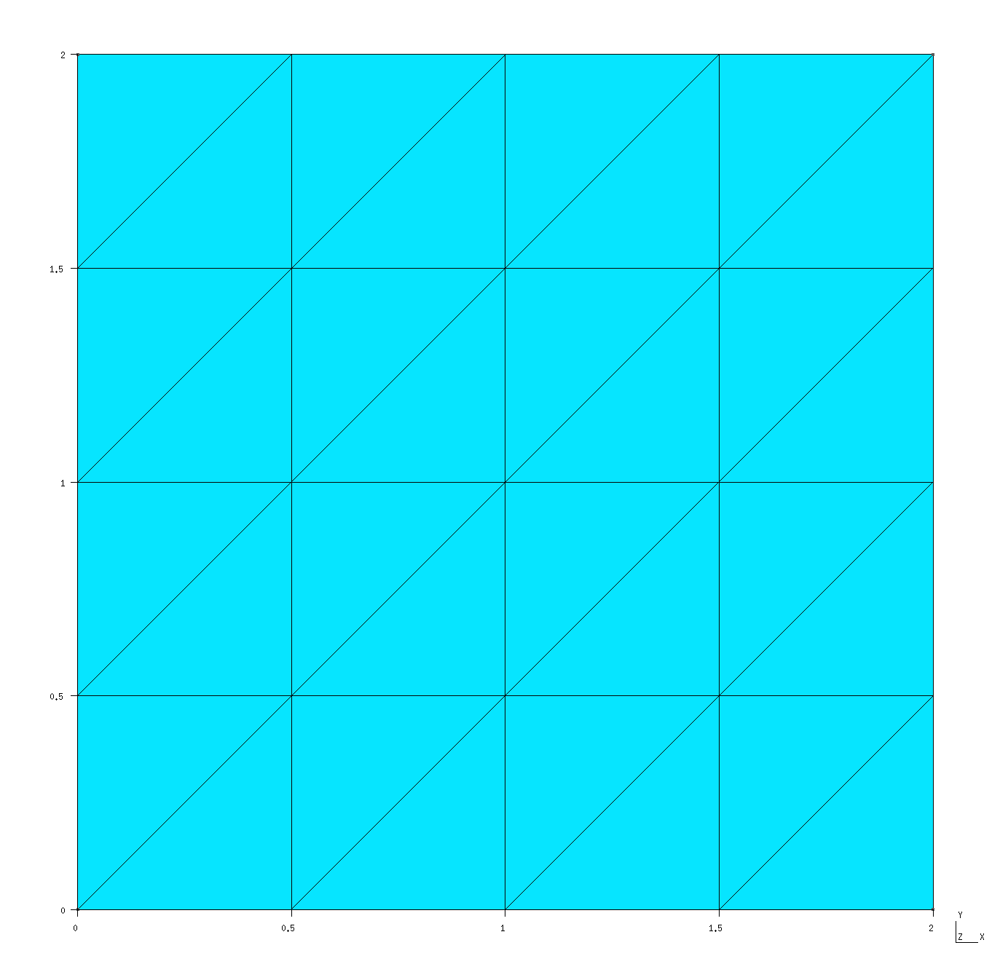
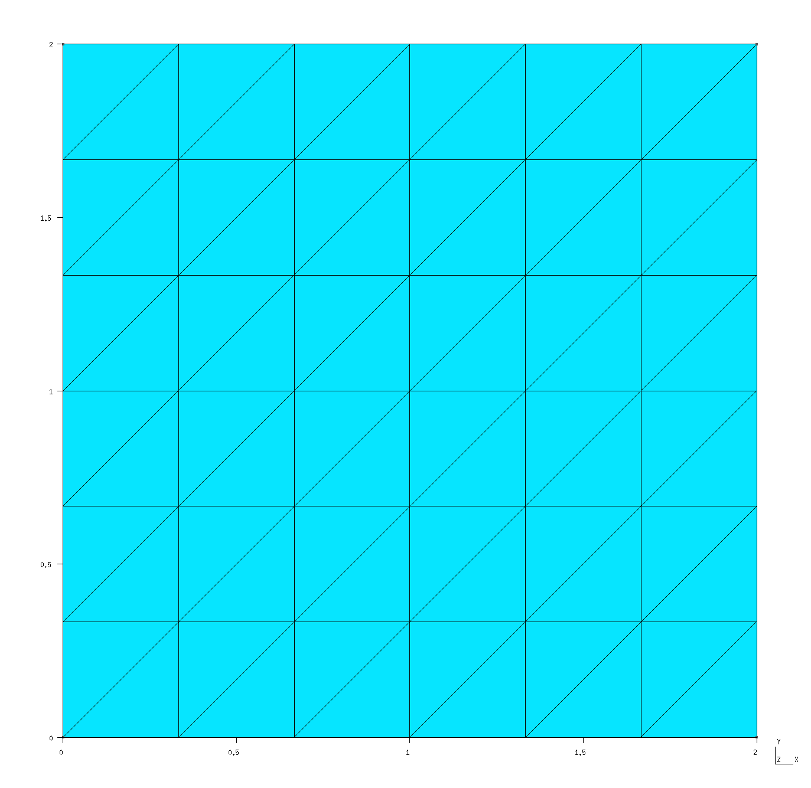
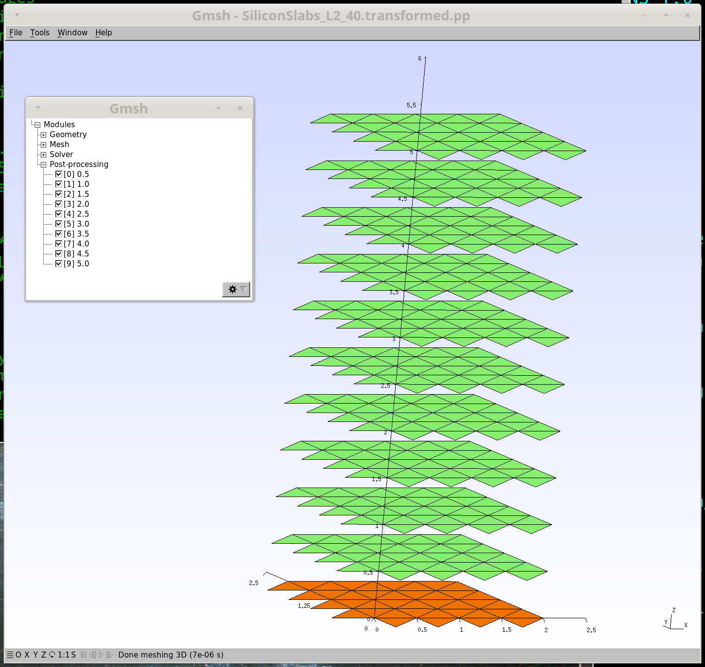
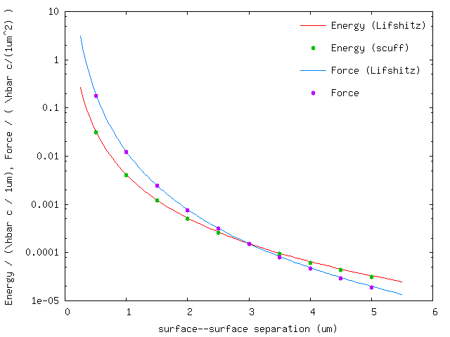

Casimir forces between infinite-area silicon slabs (2D periodicity)
In this example, we exploit scuff-em's
support for 2D periodic geometries
to compute the equilibrium Casimir force per unit area
between silicon slabs of infinite surface area.
The files for this example may be found in the
share/scuff-em/examples/SiliconSlabs subdirectory
of your scuff-em installation.
gmsh geometry file for unit-cell geometry
The gmsh geometry file Square_N.geo
describes the portion of the surface of a single
slab that lies within the unit cell,
i.e. the cell that is infinitely periodically
replicated to yield the full geometry.
In this case, the slab is infinitely thick (it is a
half-space), so its surface consists of just a single
two-dimensional sheet extending throughout the entire
unit cell. I call this file Square_N.geo to
remind myself that it contains a parameter N
that describes the meshing fineness; more specifically,
N defines the number of segments per unit length.
To produce a discretized surface-mesh representation of this geometry, we run it through gmsh:
% gmsh -2 Square_N.geo
This produces the file Square_N.msh, which
I rename to Square_L2.40.msh because the side length
of the square is and because
this particular mesh has 40 interior edges (this
number defines the number of surface-current basis
functions and thus the size of the BEM matrix in a
scuff-em calculation). Editing the .geo file
to change the N parameter to 3 (from its default
value of 2) and re-running gmsh -2 produces a
finer mesh file, which I rename to Square_L2_96.msh.
These meshes may be visualized in gmsh:
% gmsh Square_L2_40.msh
% gmsh Square_L2_96.msh
Square_L2_40.msh

Square_L2_96.msh

Note the following:
-
For 2D periodic geometries in scuff-em, the lattice vectors must lie in the plane.
-
For surfaces that straddle the unit-cell boundaries (as is the case here), each triangle edge that lies on any edge of the unit cell must have an identical image edge on the opposite side of the unit cell. An easy way to achieve this is to use extrusions in gmsh, as in the
.geofile above. -
In this case the unit cell dimensions are where . (More generally, and may be any arbitrary nonzero values, and they need not equal each other.)
scuff-em geometry file
The
scuff-em geometry file
describing two silicon half-spaces (infinitely-thick slabs)
bounded by the coarser of the two unit-cell meshes described
above is SiliconSlabs_L2_40.scuffgeo:
# SCUFF-EM geometry file for two silicon slabs,
# each of infinite cross-sectional area and infinite
# thickness, separated in the z direction by 1 microns
LATTICE
VECTOR 2.0 0.0
VECTOR 0.0 2.0
ENDLATTICE
MATERIAL SILICON
epsf = 1.035; # \epsilon_infinity
eps0 = 11.87; # \epsilon_0
wp = 6.6e15; # \plasmon frequency
Eps(w) = epsf + (eps0-epsf)/(1-(w/wp)^2);
ENDMATERIAL
REGION UpperSlab MATERIAL Silicon
REGION Gap MATERIAL Vacuum
REGION LowerSlab MATERIAL Silicon
SURFACE UpperSurface
MESHFILE Square_L2_40.msh
REGIONS UpperSlab Gap
DISPLACED 0 0 0.5
ENDOBJECT
SURFACE LowerSurface
MESHFILE Square_L2_40.msh
REGIONS LowerSlab Gap
ENDOBJECT
Note the following points:
-
Even though our geometry doesn't contain any multi-material junctions, nonetheless we have to describe it using
REGIONandSURFACEstatements instead ofOBJECT...ENDOBJECTstatements because the geometry can't be described as one or more compact objects embedded in an exterior medium. -
In the default configuration described by the
.scuffgeofile, the slab surfaces are displaced from each other by a distance of 0.5 m. The geometric transformations described below will be relative to this default separation.
scuff-em transformation file
The file describing a list of
geometric transformations
is Slabs.trans:
TRANS 0.5 SURFACE UpperSurface DISP 0 0 0.0
TRANS 1.0 SURFACE UpperSurface DISP 0 0 0.5
TRANS 1.5 SURFACE UpperSurface DISP 0 0 1.0
TRANS 2.0 SURFACE UpperSurface DISP 0 0 1.5
TRANS 2.5 SURFACE UpperSurface DISP 0 0 2.0
TRANS 3.0 SURFACE UpperSurface DISP 0 0 2.5
TRANS 3.5 SURFACE UpperSurface DISP 0 0 3.0
TRANS 4.0 SURFACE UpperSurface DISP 0 0 3.5
TRANS 4.5 SURFACE UpperSurface DISP 0 0 4.0
TRANS 5.0 SURFACE UpperSurface DISP 0 0 4.5
It's convenient to visualize the effect of these transformations on our geometry before we run the calculation:
% scuff-analyze --geometry SiliconSlabs_L2_40.scuffgeo --TransFile Slabs.trans
This produces the file SiliconSlabs_L2_40.transformed.pp,
which can be visualized by opening it in GMSH:

Launching the run
Here's a bash script that will run the full Casimir
calculation on both the coarser and finer meshes:
# /bin/bash
for N in 40 192
do
ARGS=""
ARGS="${ARGS} --geometry SiliconSlabs_L2_${N}.scuffgeo"
ARGS="${ARGS} --TransFile Beams.trans"
ARGS="${ARGS} --BZSymmetry BZSymmetry"
ARGS="${ARGS} --energy"
ARGS="${ARGS} --zForce"
scuff-cas3D ${ARGS}
done
This produces the files SiliconSlabs_L2_40.out
and SiliconSlabs_L2_96.out. The former file looks
like this:
# scuff-cas3D run on superhr1 at 06/15/15::23:50:32
# data file columns:
#1: transform tag
#2: energy
#3: energy error due to numerical Xi integration
#4: z-force
#5: z-force error due to numerical Xi integration
0.5 -1.254502e-01 5.463886e-05 -7.264755e-01 3.268714e-04
1.0 -1.631064e-02 5.770642e-06 -4.865678e-02 2.055737e-05
...
Now plot the energy and force per unit area vs. separation distance:
% gnuplot
gnuplot> set xlabel 'surface--surface separation (um)'
gnuplot> set ylabel 'Energy / (\hbar c / 1um), Force / ( \hbar c/(1um^2) )'
gnuplot> set logscale y
gnuplot> FILE='SiliconSlabs_L2_N40.out'
gnuplot> plot FILE u 1:2 t 'Energy (SCUFF)', '' u 1:4 t 'Force (SCUFF)'

In this plot, the solid lines are the results of the Lifshitz formula for the Casimir energy and force between silicon slabs.